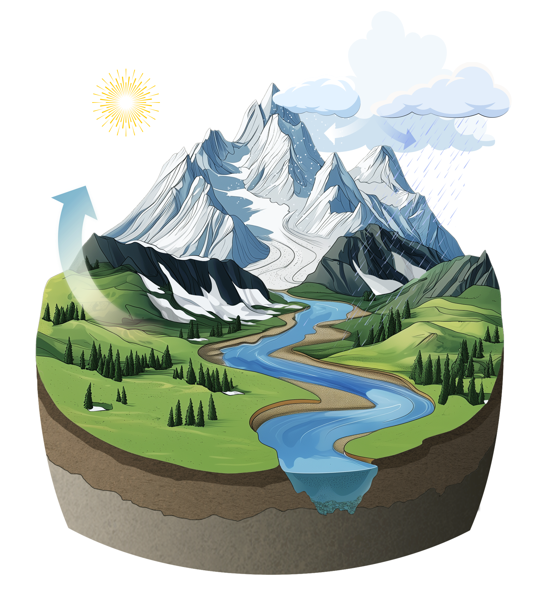

matilda

Documentation
Getting started
MATILDA Modules
matilda.core module
matilda.mspot module
matilda
Index
Index
_
|
A
|
C
|
D
|
E
|
G
|
H
|
I
|
L
|
M
|
O
|
P
|
S
|
U
|
W
|
Y
_
__enter__() (matilda.mspot_glacier.HiddenPrints method)
__exit__() (matilda.mspot_glacier.HiddenPrints method)
A
analyze_results() (in module matilda.mspot_glacier)
annual() (in module matilda.mspot_glacier)
C
calculate_glaciermelt() (in module matilda.core)
calculate_PDD() (in module matilda.core)
create_lookup_table() (in module matilda.core)
create_statistics() (in module matilda.core)
D
dict2bounds() (in module matilda.mspot_glacier)
E
evaluation() (in module matilda.mspot_glacier)
,
[1]
G
get_par_bounds() (in module matilda.mspot_glacier)
glacier_area_change() (in module matilda.core)
H
hbv_simulation() (in module matilda.core)
HiddenPrints (class in matilda.mspot_glacier)
I
input_scaling() (in module matilda.core)
L
load_parameters() (in module matilda.mspot_glacier)
loglike_kge() (in module matilda.mspot_glacier)
M
matilda.core
module
matilda.mspot_glacier
module
matilda_parameter() (in module matilda.core)
matilda_plots() (in module matilda.core)
matilda_preproc() (in module matilda.core)
matilda_save_output() (in module matilda.core)
matilda_simulation() (in module matilda.core)
matilda_submodules() (in module matilda.core)
melt_rates() (in module matilda.core)
module
matilda.core
matilda.mspot_glacier
O
objectivefunction() (in module matilda.mspot_glacier)
,
[1]
P
phase_separation() (in module matilda.core)
psample() (in module matilda.mspot_glacier)
S
scaled_ndd() (in module matilda.mspot_glacier)
scaled_pdd() (in module matilda.mspot_glacier)
simulation() (in module matilda.mspot_glacier)
,
[1]
spot_setup() (in module matilda.mspot_glacier)
spot_setup_glacier() (in module matilda.mspot_glacier)
summer() (in module matilda.mspot_glacier)
U
updated_glacier_melt() (in module matilda.core)
W
winter() (in module matilda.mspot_glacier)
Y
yesno() (in module matilda.mspot_glacier)